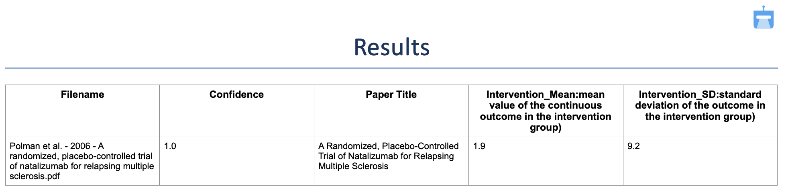

Errors
ReviewAid is designed to be robust and self-healing, but a few messages and behaviours can still appear during operation. Most of them are handled automatically; this page explains what each one means and what, if anything, you need to do. For installation and setup problems, see the troubleshooting section at the bottom of this page.
1. API limit error (rate / quota exceeded)
What it means. AI providers temporarily throttle accounts that receive too many requests in a short period. Seeing an occasional rate-limit or quota error while processing a large batch is normal.
What to do. Nothing. ReviewAid automatically retries the request three times, and if it still fails, it sends a brand-new API request for the same paper.
2. ‘Not found’ for fields like Intervention_Mean or Intervention_SD
What it means. The AI is not a researcher, so it cannot expand abbreviations on its own. If
a domain is named Intervention_Mean, the model has no way of knowing what that field is asking
for and reports it as ‘Not found’, as in the screenshot below.

What to do. Spell the field out in the Extractor input, for example:
Intervention_Mean: mean value of the continuous outcome in the intervention group and
Intervention_SD: standard deviation of the outcome in the intervention group. The screenshot
below shows the same paper processed with expanded field names.

3. Empty JSON
What it means. Occasionally the model returns an empty response. Even with a forgiving JSON parser, there is no data to recover from an empty payload.
What to do. Nothing. ReviewAid detects the empty JSON and issues another API request for the same paper until it receives a valid one.
4. All domains shown as ‘Not found’ (Extractor)
What it means. If only one or two fields are missing, the paper may genuinely not report them. When every domain for a paper comes back ‘Not found’, however, something went wrong with that particular run.
What to do. Process that paper on its own in the Extractor.
5. Abrupt stopping
What it means. The hosted Streamlit app stops long-running jobs to conserve its resources. Keep screener batches to a maximum of 10 papers per run; the Extractor is unaffected by this limit.
What to do. If jobs still stop below that limit, please open an issue on GitHub.
6. Empty API response
What it means. The model sometimes throttles and returns no response at all.
What to do. This is handled automatically: ReviewAid waits 15, 20 and then 60 seconds between retries. Watch the terminal processing output to follow what is happening.
7. “skipping file” (not an error)
What it means. Formats such as .docx or .html are not supported,
so the parser skips them. If a PDF is being skipped, the file is most likely corrupt.
What to do. Make sure every upload is a valid, undamaged PDF.
Troubleshooting
Setup and running problems, collected from the project documentation. Work through the item that matches your situation; if nothing here helps, see the last entry.
1. The online app takes about 30 seconds to load
The hosted web app runs on Streamlit and therefore has a cold start: the first load can wait around 30 seconds while the app initialises. This is normal, so give it a moment before interacting with the page.
2. Processing feels slow or appears stuck
Processing time depends on the number and size of the uploaded PDFs and on your internet connection. AI processing can take a while for large batches, so be patient. The progress indicators and the “System Terminal” panel keep you updated in real time, so if the terminal is still logging, work is still happening.
3. Only the first 20 papers were processed
Submissions are capped at 20 articles per batch. Anything beyond that is ignored, and the run terminates prematurely once the first 20 are done. Split larger sets into batches of 20 or fewer, and for the hosted screener specifically, keep batches to 10 or fewer (see error 5 above).
4. Ollama (local) model is not working
For fully local inference you need Python 3.12+ and Ollama installed and running before you launch Streamlit. Pull a model and verify Ollama responds:
ollama pull llama3
ollama listThen select Ollama (Local) as the provider in the ReviewAid UI and pick your local model; no API key is required. Keep in mind that performance depends on your local hardware (CPU / GPU / RAM), and large PDFs or batch sizes take longer on CPU-only systems.
5. API key or provider problems
API keys are entered directly in the Streamlit interface at runtime and are never stored;
there are no configuration files to edit or fix. If a request fails with an authentication error,
re-select the provider and paste the key again. Models tested with ReviewAid include GPT-4o
(OpenAI), deepseek-chat, command-a-03-2025 (Cohere),
GLM-4.6V-Flash / GLM-4.5V-Flash / GLM-4.7-Flash (Z.ai, with
GLM-4.6V-Flash as the default), Claude-Sonnet-4 (Anthropic) and Llama3
(Ollama local).
6. No text extracted from figures or scanned pages (OCR)
Image-based text is read with the Tesseract OCR engine via pytesseract. If OCR returns nothing,
make sure the Tesseract engine is installed and available on your system PATH. Very noisy or low-quality
scans can still fail; the workflow cleans extracted text and forwards it to the parsing pipeline, but
garbage input will produce poor output. For local deployments that need higher accuracy, the PaddleOCR-based
ReviewAid-OCR version is available.
7. Still stuck?
Please open an issue on the GitHub issue tracker with the terminal output attached, or reach out through the contact listed in the README. The more of the terminal log you include, the faster the problem can be diagnosed.